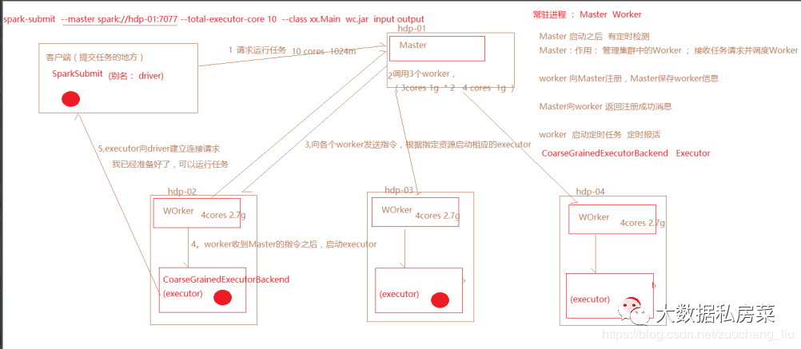
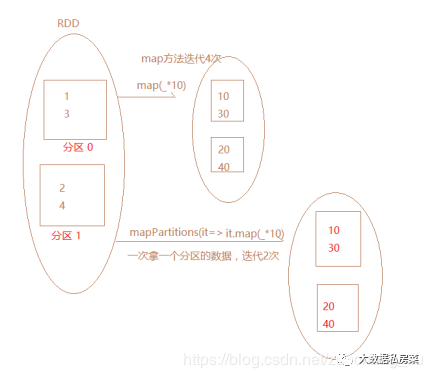
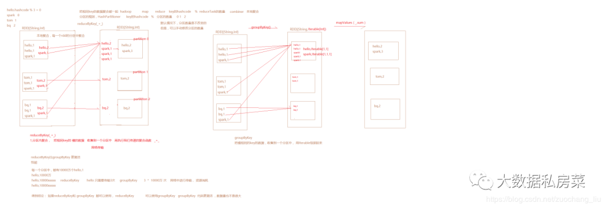
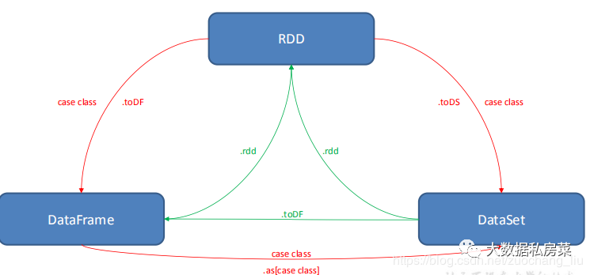

大数据004spark知识整理
1.rdd的属性
-
一组分片（Partition），即数据集的基本组成单位。对于RDD来说，每个分片都会被一个计算任务处理，并决定并行计算的粒度。用户可以在创建RDD时指定RDD的分片个数，如果没有指定，那么就会采用默认值。默认值就是程序所分配到的CPU Core的数目。
-
一个计算每个分区的函数。Spark中RDD的计算是以分片为单位的，每个RDD都会实现compute函数以达到这个目的。compute函数会对迭代器进行复合，不需要保存每次计算的结果。
-
RDD之间的依赖关系。RDD的每次转换都会生成一个新的RDD，所以RDD之间就会形成类似于流水线一样的前后依赖关系。在部分分区数据丢失时，Spark可以通过这个依赖关系重新计算丢失的分区数据，而不是对RDD的所有分区进行重新计算。
-
一个Partitioner，即RDD的分片函数。当前Spark中实现了两种类型的分片函数，一个是基于哈希的HashPartitioner，另外一个是基于范围的RangePartitioner。只有对于于key-value的RDD，才会有Partitioner，非key-value的RDD的Parititioner的值是None。Partitioner函数不但决定了RDD本身的分片数量，也决定了parent RDD Shuffle输出时的分片数量。
-
一个列表，存储存取每个Partition的优先位置（preferred location）。对于一个HDFS文件来说，这个列表保存的就是每个Partition所在的块的位置。按照“移动数据不如移动计算”的理念，Spark在进行任务调度的时候，会尽可能地将计算任务分配到其所要处理数据块的存储位置。
2.算子分为哪几类(RDD支持哪几种类型的操作)
-
转换（Transformation） 现有的RDD通过转换生成一个新的RDD。lazy模式，延迟执行。
转换函数包括：map，filter，flatMap，groupByKey，reduceByKey，aggregateByKey，union, join, coalesce 等等。
-
动作（Action） 在RDD上运行计算，并返回结果给驱动程序(Driver)或写入文件系统。
动作操作包括：reduce，collect，count，first，take，countByKey以及foreach等等。
-
collect 该方法把数据收集到driver端 Array数组类型
所有的transformation只有遇到action才能被执行。
当触发执行action之后，数据类型不再是rdd了，数据就会存储到指定文件系统中，或者直接打印结 果或者收集起来。
3.创建rdd的几种方式
- 集合并行化创建(有数据)
|
|
- 读取外部文件系统，如hdfs，或者读取本地文件(最常用的方式)(没数据)
|
|
-
从父RDD转换成新的子RDD 调用Transformation类的方法，生成新的RDD
-
从数据库创建
-
从消息系统kafka创建
4.spark运行流程
 Worker的功能：定时和master通信；调度并管理自身的executor
executor：由Worker启动的，程序最终在executor中运行，（程序运行的一个容器）
spark-submit命令执行时，会根据master地址去向 Master发送请求，
Master接收到Dirver端的任务请求之后，根据任务的请求资源进行调度，（打散的策略），尽可能的 把任务资源平均分配，然后向WOrker发送指令
Worker收到Master的指令之后，就根据相应的资源，启动executor（cores,memory）
executor会向dirver端建立请求，通知driver，任务已经可以运行了
driver运行任务的时候，会把任务发送到executor中去运行。
5.Spark中coalesce与repartition的区别
1）关系：
两者都是用来改变 RDD 的 partition 数量的，repartition 底层调用的就是 coalesce 方法：coalesce(numPartitions, shuffle = true)
2）区别：
repartition 一定会发生 shuffle，coalesce 根据传入的参数来判断是否发生 shuffle
一般情况下增大 rdd 的 partition 数量使用 repartition，减少 partition 数量时使用coalesce
6.sortBy 和 sortByKey的区别
sortBy既可以作用于RDD[K] ，还可以作用于RDD[(k,v)]
sortByKey 只能作用于 RDD[K,V] 类型上。
7.map和mapPartitions的区别

8.数据存入Redis或mysql优先使用map/mapPartitions/foreach/foreachPartions哪个
使用 foreachPartition
-
map mapPartition 是转换类的算子， 有返回值
-
写mysql,redis 的连接
foreach * 100万 100万次的连接
foreachPartions * 200 个分区 200次连接 一个分区中的数据，共用一个连接
foreachParititon 每次迭代一个分区，foreach每次迭代一个元素。
该方法没有返回值，或者Unit
主要作用于，没有返回值类型的操作（打印结果，写入到mysql数据库中）
在写入到redis,mysql的时候，优先使用foreachPartititon
9.reduceByKey和groupBykey的区别
 reduceByKey会传一个聚合函数， 相当于 groupByKey + mapValues
reduceByKey 会有一个分区内聚合，而groupByKey没有 最核心的区别
结论：reduceByKey有分区内聚合，更高效，优先选择使用reduceByKey。
10.cache和checkPoint的比较
都是做 RDD 持久化的
1.缓存，是在触发action之后，把数据写入到内存或者磁盘中。不会截断血缘关系
（设置缓存级别为memory_only：内存不足，只会部分缓存或者没有缓存，缓存会丢失,memory_and_disk :内存不足，会使用磁盘）
2.checkpoint 也是在触发action之后，执行任务。单独再启动一个job，负责写入数据到hdfs中。（把rdd中的数据，以二进制文本的方式写入到hdfs中，有几个分区，就有几个二进制文件）
3.某一个RDD被checkpoint之后，他的父依赖关系会被删除，血缘关系被截断，该RDD转换成了CheckPointRDD，以后再对该rdd的所有操作，都是从hdfs中的checkpoint的具体目录来读取数据。缓存之后，rdd的依赖关系还是存在的。
11.spark streaming流式统计单词数量代码
|
|
12.简述map和flatMap的区别和应用场景
map是对每一个元素进行操作，flatmap是对每一个元素操作后并压平,一行变多行
- 共同点
- 都是依赖FuncX(入参，返回值)进行转换（将一个类型依据程序逻辑转换成另一种类型，根据入参和返回值）
- 都能在转换后直接被subscribe
- 区别
- map返回的是结果集，flatmap返回的是包含结果集的Observable（返回结果不同）
- map被订阅时每传递一个事件执行一次onNext方法，flatmap多用于多对多，一对多，再被转化为多个时，一般利用from/just进行一一分发，被订阅时将所有数据传递完毕汇总到一个Observable然后一一执行onNext方法（执行顺序不同）»»(如单纯用于一对一转换则和map相同)
- map只能单一转换，单一只的是只能一对一进行转换，指一个对象可以转化为另一个对象但是不能转换成对象数组（map返回结果集不能直接使用from/just再次进行事件分发，一旦转换成对象数组的话，再处理集合/数组的结果时需要利用for一一遍历取出，而使用RxJava就是为了剔除这样的嵌套结构，使得整体的逻辑性更强。）
- flatmap既可以单一转换也可以一对多/多对多转换，flatmap要求返回Observable，因此可以再内部进行from/just的再次事件分发，一一取出单一对象（转换对象的能力不同）
13.计算曝光数和点击数
14.分别列出几个常用的transformation和action算子
转换算子：map,map,filter,reduceByKey,groupByKey,groupBy
行动算子：foreach，foreachpartition,collect,collectAsMap,take,top,first,count,countByKey
15.按照需求使用spark编写以下程序，要求使用scala语言
|
|
16.spark应用程序的执行命令是什么？
|
|
17.Spark应用执行有哪些模式，其中哪几种是集群模式
- 本地local模式
- standalone模式
- spark on yarn模式
- spark on mesos模式
其中，standalone模式，spark on yarn模式，spark on mesos模式是集群模式
18.请说明spark中广播变量的用途
使用广播变量，每个 Executor 的内存中，只驻留一份变量副本，而不是对 每个 task 都传输一次大变量，省了很多的网络传输， 对性能提升具有很大帮助， 而且会通过高效的广播算法来减少传输代价。
19.以下代码会报错吗？如果会怎么解决
val arr = new ArrayList[String]; arr.foreach(println)
|
|
20.写出你用过的spark中的算子，其中哪些会产生shuffle过程
reduceBykey：
groupByKey：
…ByKey:
21.Spark中rdd与partition的区别
22.请写出创建Dateset的几种方式
23.描述一下RDD，DataFrame，DataSet的区别？
- RDD
优点:
编译时类型安全
编译时就能检查出类型错误
面向对象的编程风格
直接通过类名点的方式来操作数据
缺点:
序列化和反序列化的性能开销
无论是集群间的通信, 还是 IO 操作都需要对对象的结构和数据进行序列化和反序列化。
GC 的性能开销，频繁的创建和销毁对象, 势必会增加 GC
- DataFrame
DataFrame 引入了 schema 和 off-heap
schema : RDD 每一行的数据, 结构都是一样的，这个结构就存储在 schema 中。Spark 通过 schema 就能够读懂数据, 因此在通信和 IO 时就只需要序列化和反序列化数据, 而结构的部分就可以省略了。
- DataSet
DataSet 结合了 RDD 和 DataFrame 的优点，并带来的一个新的概念 Encoder。
当序列化数据时，Encoder 产生字节码与 off-heap 进行交互，能够达到按需访问数据的效果，而不用反序列化整个对象。Spark 还没有提供自定义 Encoder 的 API，但是未来会加入。
三者之间的转换：

24.描述一下Spark中stage是如何划分的？描述一下shuffle的概念
25.Spark 在yarn上运行需要做哪些关键的配置工作？如何kill -个Spark在yarn运行中Application
26.通常来说，Spark与MapReduce相比，Spark运行效率更高。请说明效率更高来源于Spark内置的哪些机制？请列举常见spark的运行模式？
27.RDD中的数据在哪？
RDD中的数据在数据源，RDD只是一个抽象的数据集，我们通过对RDD的操作就相当于对数据进行操作。
28.如果对RDD进行cache操作后，数据在哪里？
数据在第一执行cache算子时会被加载到各个Executor进程的内存中，第二次就会直接从内存中读取而不会区磁盘。
29.Spark中Partition的数量由什么决定
和Mr一样，但是Spark默认最少有两个分区。
30.Scala里面的函数和方法有什么区别
31.SparkStreaming怎么进行监控?
32.Spark判断Shuffle的依据?
父RDD的一个分区中的数据有可能被分配到子RDD的多个分区中
33.Scala有没有多继承？可以实现多继承么？
34.Sparkstreaming和flink做实时处理的区别
35.Sparkcontext的作用
36.Sparkstreaming读取kafka数据为什么选择直连方式
37.离线分析什么时候用sparkcore和sparksql
38.Sparkstreaming实时的数据不丢失的问题
39.简述宽依赖和窄依赖概念，groupByKey,reduceByKey,map,filter,union五种操作哪些会导致宽依赖，哪些会导致窄依赖
40.数据倾斜可能会导致哪些问题，如何监控和排查，在设计之初，要考虑哪些来避免
41.有一千万条短信，有重复，以文本文件的形式保存，一行一条数据，请用五分钟时间，找出重复出现最多的前10条
42.现有一文件，格式如下，请用spark统计每个单词出现的次数
43.共享变量和累加器
累加器（accumulator）是 Spark 中提供的一种分布式的变量机制，其原理类似于mapreduce，即分布式的改变，然后聚合这些改变。累加器的一个常见用途是在调试时对作业执行过程中的事件进行计数。而广播变量用来高效分发较大的对象。
共享变量出现的原因：
通常在向 Spark 传递函数时，比如使用 map() 函数或者用 filter() 传条件时，可以使用驱动器程序中定义的变量，但是集群中运行的每个任务都会得到这些变量的一份新的副本，更新这些副本的值也不会影响驱动器中的对应变量。
Spark 的两个共享变量，累加器与广播变量，分别为结果聚合与广播这两种常见的通信模式突破了这一限制。
44.当 Spark 涉及到数据库的操作时，如何减少 Spark 运行中的数据库连接数？
使用 foreachPartition 代替 foreach，在 foreachPartition 内获取数据库的连接。
45.特别大的数据，怎么发送到excutor中？
46.spark调优都做过哪些方面？
47.spark任务为什么会被yarn kill掉？
48.Spark on Yarn作业执行流程？yarn-client和yarn-cluster有什么区别？
Spark on Yarn作业执行流程？
- Spark Yarn Client 向 Yarn 中提交应用程序。
- ResourceManager 收到请求后，在集群中选择一个 NodeManager，并为该应用程序分配一个 Container，在这个 Container 中启动应用程序的 ApplicationMaster， ApplicationMaster 进行 SparkContext 等的初始化。
- ApplicationMaster 向 ResourceManager 注册，这样用户可以直接通过 ResourceManager 查看应用程序的运行状态，然后它将采用轮询的方式通过RPC协议为各个任务申请资源，并监控它们的运行状态直到运行结束。
- ApplicationMaster 申请到资源（也就是Container）后，便与对应的 NodeManager 通信，并在获得的 Container 中启动 CoarseGrainedExecutorBackend，启动后会向 ApplicationMaster 中的 SparkContext 注册并申请 Task。
- ApplicationMaster 中的 SparkContext 分配 Task 给 CoarseGrainedExecutorBackend 执行，CoarseGrainedExecutorBackend 运行 Task 并向ApplicationMaster 汇报运行的状态和进度，以让 ApplicationMaster 随时掌握各个任务的运行状态，从而可以在任务失败时重新启动任务。
- 应用程序运行完成后，ApplicationMaster 向 ResourceManager申请注销并关闭自己。
yarn-client和yarn-cluster有什么区别？
- 理解YARN-Client和YARN-Cluster深层次的区别之前先清楚一个概念：Application Master。在YARN中，每个Application实例都有一个ApplicationMaster进程，它是Application启动的第一个容器。它负责和ResourceManager打交道并请求资源，获取资源之后告诉NodeManager为其启动Container。从深层次的含义讲YARN-Cluster和YARN-Client模式的区别其实就是ApplicationMaster进程的区别
- YARN-Cluster模式下，Driver运行在AM(Application Master)中，它负责向YARN申请资源，并监督作业的运行状况。当用户提交了作业之后，就可以关掉Client，作业会继续在YARN上运行，因而YARN-Cluster模式不适合运行交互类型的作业
- YARN-Client模式下，Application Master仅仅向YARN请求Executor，Client会和请求的Container通信来调度他们工作，也就是说Client不能离开
49.Flatmap底层编码实现？
flatMap其实就是将RDD里的每一个元素执行自定义函数f，这时这个元素的结果转换成iterator，最后将这些再拼接成一个
新的RDD，也可以理解成原本的每个元素由横向执行函数f后再变为纵向。画红部分一直在回调，当RDD内没有元素为止。